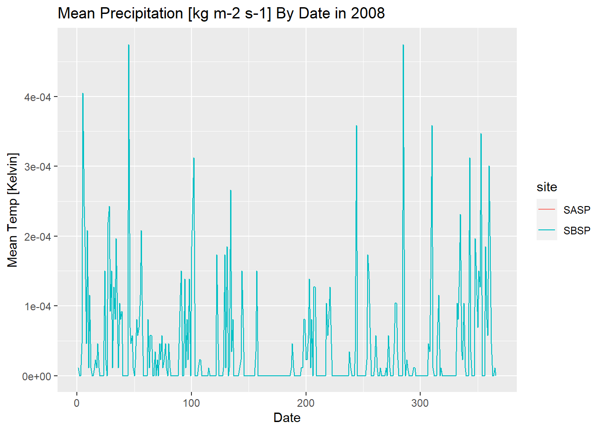

Chapter 3 Snow Data Assignment: Web Scraping, Functions, and Iteration
R can read html using either rvest, xml, or xml2 packages. Here we are going to navigate to the Center for Snow and Avalance Studies Website and read a table in. This table contains links to data we want to programatically download for three sites. We don’t know much about these sites, but they contain incredibly rich snow, temperature, and precip data.
3.1 Reading an html
3.1.1 Extract CSV links from webpage
site_url <- 'https://snowstudies.org/archived-data/'
#Read the web url
webpage <- read_html(site_url)
#See if we can extract tables and get the data that way
tables <- webpage %>%
html_nodes('table') %>%
magrittr::extract2(3) %>%
html_table(fill = TRUE)
#That didn't work, so let's try a different approach
#Extract only weblinks and then the URLs!
links <- webpage %>%
html_nodes('a') %>%
.[grepl('24hr',.)] %>%
html_attr('href')3.2 Data Download
3.2.1 Download data in a for loop
#Grab only the name of the file by splitting out on forward slashes
splits <- str_split_fixed(links,'/',8)
#Keep only the 8th column
dataset <- splits[,8]
#generate a file list for where the data goes
file_names <- paste0('03-data/', dataset)
for(i in 1:3){
download.file(links[i],destfile=file_names[i])
}
downloaded <- file.exists(file_names)
evaluate <- !all(downloaded)3.3 Data read-in
3.3.1 Read in just the snow data as a loop
#Pattern matching to only keep certain files
snow_files <- file_names %>%
.[!grepl('SG_24',.)] %>%
.[!grepl('PTSP',.)]
empty_data <- list()
snow_data <- for(i in 1:length(snow_files)){
empty_data[[i]] <- read_csv(snow_files[i]) %>%
select(Year,DOY,Sno_Height_M)
}
snow_data_full <- do.call('rbind',empty_data)
summary(snow_data_full)## Year DOY Sno_Height_M
## Min. :2003 Min. : 1.0 Min. :-3.523
## 1st Qu.:2008 1st Qu.: 92.0 1st Qu.: 0.350
## Median :2012 Median :183.0 Median : 0.978
## Mean :2012 Mean :183.1 Mean : 0.981
## 3rd Qu.:2016 3rd Qu.:274.0 3rd Qu.: 1.520
## Max. :2021 Max. :366.0 Max. : 2.905
## NA's :45543.3.2 Read in the data as a map function
our_snow_reader <- function(file){
name = str_split_fixed(file,'/',2)[,2] %>%
gsub('_24hr.csv','',.)
df <- read_csv(file) %>%
select(Year,DOY,Sno_Height_M) %>%
mutate(site = name)
}
snow_data_full <- map_dfr(snow_files,our_snow_reader)
summary(snow_data_full)## Year DOY Sno_Height_M site
## Min. :2003 Min. : 1.0 Min. :-3.523 Length:12786
## 1st Qu.:2008 1st Qu.: 92.0 1st Qu.: 0.350 Class :character
## Median :2012 Median :183.0 Median : 0.978 Mode :character
## Mean :2012 Mean :183.1 Mean : 0.981
## 3rd Qu.:2016 3rd Qu.:274.0 3rd Qu.: 1.520
## Max. :2021 Max. :366.0 Max. : 2.905
## NA's :4554
3.4 Assignment:
- Extract the meteorological data URLs. Here we want you to use the
rvestpackage to get the URLs for theSASP forcingandSBSP_forcingmeteorological datasets.
links_forcing <- webpage %>%
html_nodes('a') %>%
.[grepl('forcing',.)] %>%
html_attr('href')- Download the meteorological data. Use the
download_fileandstr_split_fixedcommands to download the data and save it in your data folder. You can use a for loop or a map function.
#Grab only the name of the file by splitting out on forward slashes
splits2 <- str_split_fixed(links_forcing,'/',8)
#Keep only the 8th column
dataset2 <- splits2[,8]
#generate a file list for where the data goes
file_names2 <- paste0('03-data/', dataset2)
for(i in 1:2){
download.file(links_forcing[i], destfile=file_names2[i])
}- Write a custom function to read in the data and append a site column to the data.
# this code grabs the variable names from the metadata pdf file
library(pdftools)
headers <- pdf_text('https://snowstudies.org/wp-content/uploads/2022/02/Serially-Complete-Metadata-text08.pdf') %>%
readr::read_lines(.) %>%
trimws(.) %>%
str_split_fixed(.,'\\.',2) %>%
.[,2] %>%
.[1:26] %>%
str_trim(side = "left")
forcing_snow_reader <- function(dfile){
name = str_split_fixed(dfile,'/',2)[,2] %>%
gsub('_Forcing_Data.txt','',.) %>%
gsub('SBB_','',.)
df <- read_table(dfile, col_names = headers, na = "NA")
# When using mutate
# df <- mutate(site = name)
# Continued to recieve the error:
# Error in UseMethod("mutate") : no applicable method for 'mutate' applied to an object of class "character"
# Solution:
df %>% add_column(site = name)
}- Use the
mapfunction to read in both meteorological files. Display a summary of your tibble.
# Attempted renaming strategies:
# names(df) <- headers
#
# select(Year,DOY,Sno_Height_M)
# rename_with(headers) %>%
forcing_data_full <- map_dfr(file_names2, forcing_snow_reader)##
## -- Column specification --------------------------------------------------------------------------------------
## cols(
## .default = col_double(),
## `qc code precip` = col_character(),
## `qc code sw down` = col_character(),
## `qc code lw down` = col_character(),
## `qc code air temp` = col_character(),
## `qc code wind speed` = col_character(),
## `qc code relhum` = col_character()
## )
## i Use `spec()` for the full column specifications.
##
##
## -- Column specification --------------------------------------------------------------------------------------
## cols(
## .default = col_double(),
## `qc code precip` = col_character(),
## `qc code sw down` = col_character(),
## `qc code lw down` = col_character(),
## `qc code air temp` = col_character(),
## `qc code wind speed` = col_character(),
## `qc code relhum` = col_character()
## )
## i Use `spec()` for the full column specifications.summary(forcing_data_full)## year month day hour minute second precip [kg m-2 s-1]
## Min. :2003 Min. : 1.000 Min. : 1.00 Min. : 0.00 Min. :0 Min. :0 Min. :0.000000
## 1st Qu.:2005 1st Qu.: 3.000 1st Qu.: 8.00 1st Qu.: 5.75 1st Qu.:0 1st Qu.:0 1st Qu.:0.000000
## Median :2007 Median : 6.000 Median :16.00 Median :11.50 Median :0 Median :0 Median :0.000000
## Mean :2007 Mean : 6.472 Mean :15.76 Mean :11.50 Mean :0 Mean :0 Mean :0.000038
## 3rd Qu.:2009 3rd Qu.: 9.000 3rd Qu.:23.00 3rd Qu.:17.25 3rd Qu.:0 3rd Qu.:0 3rd Qu.:0.000000
## Max. :2011 Max. :12.000 Max. :31.00 Max. :23.00 Max. :0 Max. :0 Max. :0.006111
## NA's :8 NA's :8 NA's :8 NA's :8 NA's :8 NA's :8 NA's :8
## sw down [W m-2] lw down [W m-2] air temp [K] windspeed [m s-1] relative humidity [%]
## Min. :-9999.000 Min. :-9999.0 Min. :242.1 Min. :-9999.000 Min. : 0.011
## 1st Qu.: -3.510 1st Qu.: 173.4 1st Qu.:265.8 1st Qu.: 0.852 1st Qu.: 37.580
## Median : -0.344 Median : 231.4 Median :272.6 Median : 1.548 Median : 59.910
## Mean :-1351.008 Mean :-1325.7 Mean :272.6 Mean : -790.054 Mean : 58.891
## 3rd Qu.: 294.900 3rd Qu.: 272.2 3rd Qu.:279.7 3rd Qu.: 3.087 3rd Qu.: 81.600
## Max. : 1341.000 Max. : 365.8 Max. :295.8 Max. : 317.300 Max. :324.800
## NA's :8 NA's :8 NA's :8 NA's :8 NA's :8
## pressure [Pa] specific humidity [g g-1] calculated dewpoint temperature [K]
## Min. :63931 Min. :0.000000 Min. : 0.0
## 1st Qu.:63931 1st Qu.:0.001744 1st Qu.: 0.0
## Median :65397 Median :0.002838 Median : 0.0
## Mean :65397 Mean :0.003372 Mean : 74.9
## 3rd Qu.:66863 3rd Qu.:0.004508 3rd Qu.: 0.0
## Max. :66863 Max. :0.014780 Max. :2002.0
## NA's :8 NA's :8 NA's :8
## precip, WMO-corrected [kg m-2 s-1] air temp, corrected with Kent et al. (1993) [K]
## Min. : 0.0 Min. : 0
## 1st Qu.: 0.0 1st Qu.: 0
## Median : 0.0 Median : 0
## Mean : 424.7 Mean : 438
## 3rd Qu.: 0.0 3rd Qu.: 0
## Max. :3002.0 Max. :5002
## NA's :8 NA's :8
## air temp, corrected with Anderson and Baumgartner (1998)[K]
## Min. : 0.0
## 1st Qu.: 0.0
## Median : 0.0
## Mean : 173.9
## 3rd Qu.: 0.0
## Max. :5002.0
## NA's :8
## air temp, corrected with Nakamura and Mahrt (2005) [K] air temp, corrected with Huwald et al. (2009) [K]
## Min. : 0.0 Min. : 0.00
## 1st Qu.: 0.0 1st Qu.: 0.00
## Median : 0.0 Median : 0.00
## Mean : 605.9 Mean : 56.49
## 3rd Qu.: 0.0 3rd Qu.: 0.00
## Max. :6002.0 Max. :6009.00
## NA's :8 NA's :5222
## qc code precip qc code sw down qc code lw down qc code air temp qc code wind speed
## Length:138344 Length:138344 Length:138344 Length:138344 Length:138344
## Class :character Class :character Class :character Class :character Class :character
## Mode :character Mode :character Mode :character Mode :character Mode :character
##
##
##
##
## qc code relhum site
## Length:138344 Length:138344
## Class :character Class :character
## Mode :character Mode :character
##
##
##
## - Make a line plot of mean temp by year by site (using the
air temp [K]variable). Is there anything suspicious in the plot? Adjust your filtering if needed.
mean_temp_year <- forcing_data_full %>%
group_by(year, site) %>%
summarize(mean_temp = mean(`air temp [K]`, na.rm = TRUE))
ggplot(mean_temp_year, aes(year, mean_temp, color = site)) +
geom_line() + labs(title = "Mean Temperature [K] By Year", x = "Year", y = "Mean Temp [Kelvin]")The year 2003 produced abnormally low mean temperatures for both sites.
- Write a function that makes line plots of monthly average temperature at each site for a given year. Use a for loop to make these plots for 2005 to 2010. Are monthly average temperatures at the Senator Beck Study Plot ever warmer than the Snow Angel Study Plot? Hint: https://ggplot2.tidyverse.org/reference/print.ggplot.html
monthly_temp <- function(data, year_value){
dataf <- data %>% filter(year == year_value)
month_values <- dataf %>% group_by(month, site) %>%
summarize(mean_temp = mean(`air temp [K]`, na.rm = TRUE))
plot_title <- paste("Mean Temperature [K] By Month in", year_value)
p1 <- ggplot(month_values, aes(month, mean_temp, color = site)) +
geom_line() + labs(title = plot_title, x = "Month", y = "Mean Temp [Kelvin]")
print(p1)
}
year_input <- c(2005, 2006, 2007, 2008, 2009, 2010)
for (i in 1:length(year_input)){
monthly_temp_plots <- monthly_temp(forcing_data_full, year_input[i])
} From the 6 graphs created, we cannot find a monthly temperature observation where SBSP exceeds the SASP site.
From the 6 graphs created, we cannot find a monthly temperature observation where SBSP exceeds the SASP site.
Bonus: Make a plot of average daily precipitation by day of year (averaged across all available years). Color each site.
# Create a date from given days
forcing_dates <- forcing_data_full %>% mutate(Date = make_date(year, month, day)) %>%
filter(!is.na(Date)) %>%
mutate(day_val = yday(Date))
daily_values <- forcing_dates %>% group_by(day_val, site) %>%
summarize(mean_precip = mean(`precip [kg m-2 s-1]`, na.rm = TRUE))
p2 <- ggplot(daily_values, aes(day_val, mean_precip, color = site)) +
geom_line() + labs(title = "Average Daily Precipitation by Day of Year", x = "Day", y = "Precip [kg m-2 s-1]")
print(p2)Bonus #2: Use a function and for loop to create yearly plots of precipitation by day of year. Color each site.
daily_precip <- function(precip_data, year_value){
precip_dataf <- precip_data %>% filter(year == year_value)
day_values <- precip_dataf %>% group_by(day_val, site) %>%
summarize(mean_year_precip = mean(`precip [kg m-2 s-1]`, na.rm = TRUE))
plot_title <- paste("Mean Precipitation [kg m-2 s-1] By Date in", year_value)
p3 <- ggplot(day_values, aes(day_val, mean_year_precip, color = site)) +
geom_line() + labs(title = plot_title, x = "Date", y = "Mean Temp [Kelvin]")
print(p3)
}
year_input <- c(2003, 2004, 2005, 2006, 2007, 2008, 2009, 2010, 2011)
for (i in 1:length(year_input)){
daily_precip_plots <- daily_precip(forcing_dates, year_input[i])
}